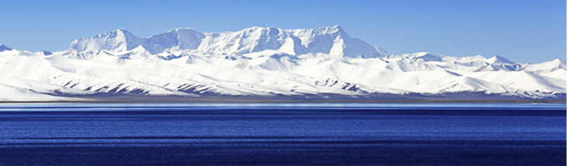

- 协会简介
- 发展战略
- 发展历程
- 协会荣誉
西藏矿泉水协会
协会性质:本协会是西藏达氏集团有限责任公司发起和成立的行业协会， 由西藏特色产业股怡有限公司、科研院所西藏矿泉水厂商、农村经济组 识和有关部门组成的非营利性社会团体组织。 在科学发展观的指引下，以我区得天独厚的矿泉水资源为依托，瞄准国内 外高端市场，依靠科技进步和现代加工技术，大力开发和生产出无污染、 高品质的矿泉 水系 列产品，保护生态资源合理开发利用，以矿泉水产业 促进西藏农村经济多元化发展带动农民增收致富，为我区经济跨减发展 做亚献，为边远贫困县的社会主义新农村建设办实事，
雄关漫道,携手同跃
西藏矿泉水协会简介
发布者:西藏白治区矿泉水协会 浏览制水:2890
协会性质：本协会是西藏达氏集团有限责任公司发起和成立的行业协会，由西藏特色产业股份有限公司、科研院所、西藏矿泉水厂商、农村经济组织和有关部门组成的非营利性社会团体组织。
第二条 协会宗旨：在科学发展观的指引下，以我区得天独厚的矿泉水资源为依托，瞄准国内外高端市场，依靠科技进步和现代加工技术，大力开发和生产出无污染、高品质的矿泉水系列产品。保护生态资源、合理开发利用，以矿泉水产业促进西藏农村经济多元化发展，带动农民增收致富，为我区经济跨越发展做贡献，为边远贫困县的社会主义新农村建设办实事。
第四条 本协会自觉的执行和接受国家和自治区社团管理办法和业务主管部门的管理、监督、指导。
第五条 协会地点：
西藏自治区拉萨市藏热路中段1号《西藏商会大厦》
第二章 业务范围
第六条 业务范围与职能
（一）与区内外科研院所建立稳定的合作关系，加快开发和生产出无污染、高品质、高附加值的矿泉水系列产品，逐步实现资源的最大经济效益；
（二）保护自然资源、重视生态建设、实现可持续发展、做到生态、经济“双赢”；
（三）积极参与矿泉水产地生态环境建设项目；
（四）在矿泉水产区农户开展生态资源保护、发展和从事多种经营的劳动技能培训，并提供技术咨询和服务；
（五）加强协调服务，为协会会员排忧解难。
第三章 会 员
第七条 本协会会员由西藏特色产业股份有限公司，行政、业务管理部门、区内矿泉水生产厂家矿泉水所在地的农村经济组织和商户、区内外科研部门和专家组成。（西藏矿泉水协会第一批会员名单详见附件）
第八条 入会条件
（一）拥护中国共产党领导，坚定不移维护统一、反对分裂促进发展；
（二）拥护协会章程，有社会责任心；
（三）在发展和开发生产矿泉水产业发展方面有一定成绩、优势、影响。
第九条 会员入会的程序：
（一）提交入会申请书，并附相关证明；
（二）经理事会调查核实并讨论通过；
（三）由理事会或理事会授权的协会办公室正式发给会员证。
第十条 会员享有下列权利；
（一）由选举权、被选举权和表决权；
（二）参加协会的活动；
（三）优先获得协会服务和产业发展信息；
（四）有对协会工作提出批评建议、督促检查的权利；
矿泉水协会战略
协会性质:本协会是西藏达氏集团有限责任公司发起和成立的行业协会，由西藏特色产业股份有限公司,科研院所，西藏
-
【规模取胜】 战略阶段
协会性质：本协会是西藏达氏集团有限责任公司发起和成立的行业协会，的行业协会，由西藏特色产业股份有限公司、科研院所、西藏协会性质：
本协会是西藏达氏集团有限责任公司发起和成立的行业协会，由西藏特色产业股份有限公司、科研院所、西藏矿泉水厂商、农村经济组织和有关部门组成的非营利性社会团体组织。
-
【规模+品牌】 战略阶段
协会性质：本协会是西藏达氏集团有限责任公司发起和成立的行业协会，的行业协会，由西藏特色产业股份有限公司、科研院所、西藏协会性质：
本协会是西藏达氏集团有限责任公司发起和成立的行业协会，由西藏特色产业股份有限公司、科研院所、西藏矿泉水厂商、农村经济组织和有关部门组成的非营利性社会团体组织。
-
【多元+规模+品牌】 战略阶段
协会性质：本协会是西藏达氏集团有限责任公司发起和成立的行业协会，的行业协会，由西藏特色产业股份有限公司、科研院所、西藏协会性质：
本协会是西藏达氏集团有限责任公司发起和成立的行业协会，由西藏特色产业股份有限公司、科研院所、西藏矿泉水厂商、农村经济组织和有关部门组成的非营利性社会团体组织。
2012-2017
西藏矿泉水协会历程
协会性质：本协会是西藏达氏集团有限责任公司发起和成立的行业协会，由西藏特色产业股份有限公司、科研院所、西藏矿泉水厂商、农村经济组织和有关部门组成的非营利性社会团体组织。
2016年7月
协会性质：本协会是西藏达氏集团有限责任公司发起和成立的行业协会，由西藏特色产业股份有限公司、科研院所、西藏矿泉水厂商、农村经济组织和有关部门组成的非营利性社会团体组织。
2015年3月
协会性质：本协会是西藏达氏集团有限责任公司发起和成立的行业协会，由西藏特色产业股份有限公司、科研院所、西藏矿泉水厂商、农村经济组织和有关部门组成的非营利性社会团体组织。
2014年8月
协会性质：本协会是西藏达氏集团有限责任公司发起和成立的行业协会，由西藏特色产业股份有限公司、科研院所、西藏矿泉水厂商、农村经济组织和有关部门组成的非营利性社会团体组织。
2012年4月
协会性质：本协会是西藏达氏集团有限责任公司发起和成立的行业协会，由西藏特色产业股份有限公司、科研院所、西藏矿泉水厂商、农村经济组织和有关部门组成的非营利性社会团体组织。
2017青少年奖****荣誉证书
2017青少年奖****荣誉证书
2017青少年奖****荣誉证书
2017青少年奖****荣誉证书
2017青少年奖****荣誉证书
2017青少年奖****荣誉证书
2017青少年奖****荣誉证书
2017青少年奖****荣誉证书
2017青少年奖****荣誉证书